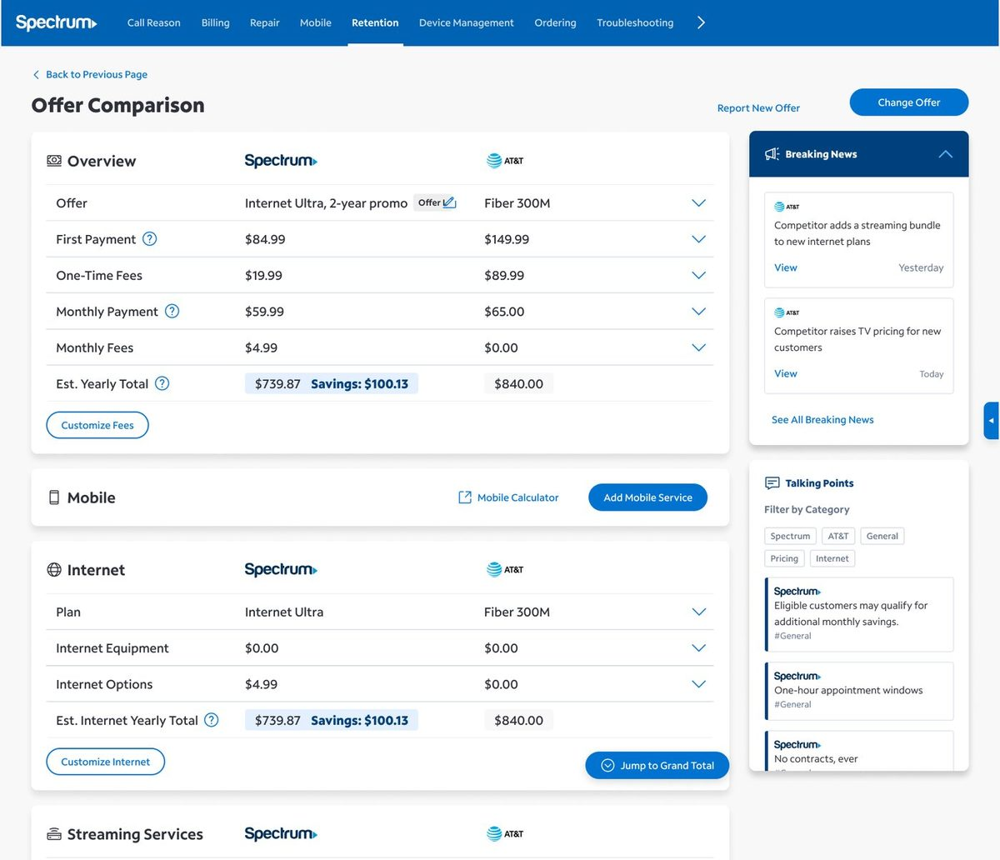
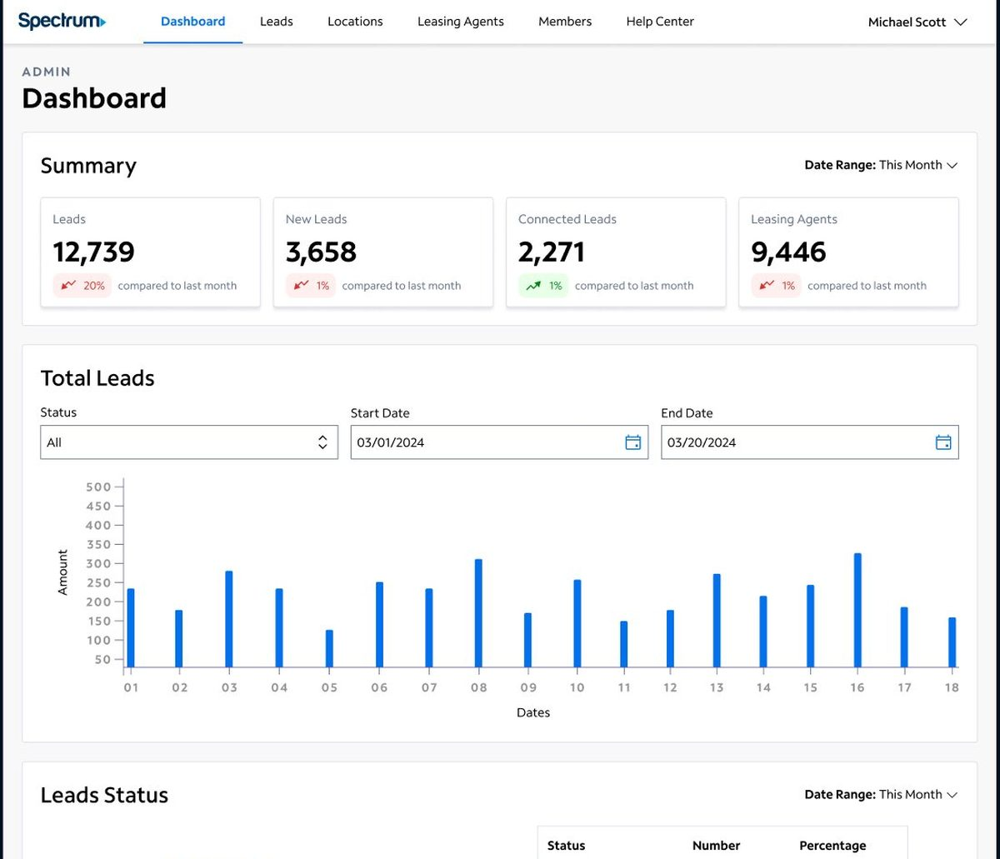

Internal tools · 2022–2023 · AgentOS
Competitive Edge
The offer comparison tool agents had stopped trusting, rebuilt for the live call.
2+ min43 sto find a competitor offer in testing
3.66.7agent satisfaction out of 7

PasswordProduct Designer, Spectrum
Four years across internal tools and the corporate website: agents on live calls, sales reps chasing referrals, and executives signing off on a component system. The work is less about pixels than about getting the right decision made, then making sure it ships.
Two years designing for employees inside AgentOS, then two co-leading the redesign of Spectrum's corporate site.
Discovery, design sprints, usability testing, and the developer-ready specs that get it built.
I start with the person on the other side of the screen and what they're trying to get done.
Selected work
Both were built for people under pressure. Each case study walks through the problem, the research, and every design decision as a numbered callout on the screen it changed.
Internal tools · 2022–2023 · AgentOS
The offer comparison tool agents had stopped trusting, rebuilt for the live call.

PasswordInternal tools · 2024–2025 · Lead designer
A referral platform brought in-house, and built for the people running it.

PasswordCorporate website · 2024–present · Co-lead
Co-leading the redesign of the public corporate website and the component system it's being rebuilt on. Sixteen pages migrated so far, with executive stakeholders in the room for every direction call.
Case study in progress. Happy to walk through it live.
About
My first job was in the nonprofit world, working with adults with Down syndrome. Watching how much the right tool could change someone's day is a big part of why I moved into design.
Since 2022 I've been a product designer at Spectrum, on two very different sides of the business. The first two years were internal tools: untangling complicated workflows, sitting with the people who used those tools every day, and designing for agents who were mid-call and had no time to learn anything new.
Since 2024 I've been on the public-facing side, co-leading the redesign of our corporate website. I set the foundation for the component system the site is being rebuilt on, 16 pages and counting, and I work directly with executive stakeholders on where it's headed. A lot of that job is getting a room full of strong opinions to land on a direction, then making sure it actually gets built.
AI is a growing part of how I work. I use it for project management and documentation, and I've been building agents that automate large-scale design audits and research synthesis for our studio.
The psychology and sociology background still sits underneath all of it. Internal tool or public website, I start with the person on the other side and what they're trying to get done, then figure out how to make that easier.
Most of the wins in my case studies came from watching how people actually worked, not from a layout idea.
Scenario-based tasks with real agents catch what stakeholder reviews never will.
Every choice gets a reason written down, so executives can approve it and developers can build it without a second meeting.
Resume
Product designer with four years at Spectrum across internal tools and the corporate website, plus a background in research and human behavior. Strongest in enterprise UX, design systems, and getting cross-functional teams aligned.
Co-lead of the corporate website redesign and its component system. Previously redesigned Competitive Edge, its admin tool, and the Multi-Tenant Sales platform inside AgentOS. Builds AI agents that automate design audits and research synthesis for the studio.
Product design for a community nonprofit, from research through handoff.
Full-time immersive. Winning team, Winter 2022 hackathon on accessible money management.
Operations and program support for a foundation serving people with Down syndrome.